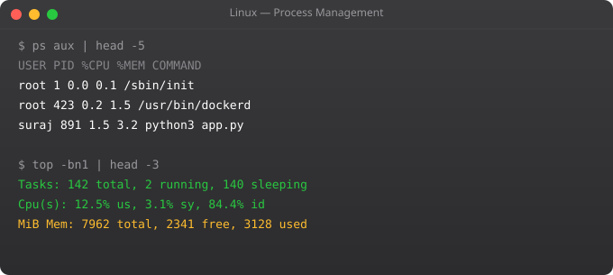

Every running program in Linux is a process. Managing processes -- understanding what is running, how much resources each uses, how to control them, and how to make services start automatically -- is core Linux sysadmin and DevOps work. This part covers everything from the ps command to systemd service management.
ps aux # All processes with details
ps aux | grep nginx # Find nginx processes
ps -ef # All processes, full format
pgrep nginx # Get PID(s) of nginx
top # Live process monitor
# In top: q=quit k=kill r=renice Shift+M=sort by memory
htop # Better top (install first: apt install htop)
# In htop: F3=search F4=filter F9=kill F10=quit
watch -n 2 "ps aux | grep myapp" # Repeat command every 2 secondskill 1234 # SIGTERM (15) -- graceful shutdown
kill -9 1234 # SIGKILL -- force kill (cannot be caught)
kill -HUP 1234 # SIGHUP -- reload config
pkill nginx # Kill by name
pkill -f "python app.py" # Kill by full command
killall python3 # Kill all processes named python3
# Find and kill process using a port
lsof -i :8080
fuser -k 8080/tcp # Kill process using TCP port 8080./script.sh & # Run in background
nohup ./script.sh & # Immune to hangup (survives SSH disconnect)
screen -S mysession # Create a named screen session
screen -r mysession # Resume session
tmux new -s work # Create tmux session
tmux attach -t work # Attach to session
jobs # List background jobs in current shell
bg 1 # Resume job 1 in background
fg 1 # Bring job 1 to foreground
Ctrl+Z # Suspend current processsystemctl status nginx # Check service status
systemctl start nginx # Start service
systemctl stop nginx # Stop service
systemctl restart nginx # Stop and start
systemctl reload nginx # Reload config (no downtime)
systemctl enable nginx # Start on boot
systemctl disable nginx # Do not start on boot
systemctl is-active nginx # Is it running?
systemctl list-units --type=service # All services
# View service logs
journalctl -u nginx # All logs for nginx
journalctl -u nginx --since "1 hour ago" # Recent logs
journalctl -f -u nginx # Follow live logs[Unit]
Description=My Python Application
After=network.target
Wants=network.target
[Service]
Type=simple
User=ubuntu
WorkingDirectory=/home/ubuntu/myapp
ExecStart=/home/ubuntu/myapp/venv/bin/python app.py
Restart=always
RestartSec=5
Environment=PORT=8000
Environment=LOG_LEVEL=INFO
[Install]
WantedBy=multi-user.target
# After creating the file:
systemctl daemon-reload
systemctl enable myapp
systemctl start myappkill sends SIGTERM (15) -- asks the process to terminate gracefully, allowing cleanup. kill -9 sends SIGKILL -- the kernel immediately terminates the process with no cleanup. Always try SIGTERM first. Use SIGKILL only when the process does not respond.
A zombie process has finished execution but its entry still exists in the process table because its parent has not acknowledged its exit. Zombies consume minimal resources but indicate a programming error in the parent process. Kill the parent to clean up zombies.
service is an older wrapper that calls init scripts. systemctl is the modern interface for systemd. On modern Ubuntu/Debian systems, systemctl is preferred. service nginx restart is equivalent to systemctl restart nginx on systemd systems.
top sorted by CPU by default. Press M in top to sort by memory. htop provides a better visual. ps aux --sort=-%cpu | head -10 for top CPU users. ps aux --sort=-%mem | head -10 for memory.
A daemon is a background process that runs continuously, usually started at boot, providing a service. Web servers (nginx), databases (postgresql), SSH (sshd) are all daemons. systemd manages daemons on modern Linux systems.
In Part 6, we cover Linux networking commands for configuring and debugging network connectivity.
← Back to Blog# OOM (Out Of Memory) killer: Linux kills processes when RAM is exhausted
# Check if OOM killer has run recently
dmesg | grep -i "oom\|killed process"
grep "Out of memory" /var/log/syslog | tail -10
# See OOM score of processes (higher = more likely to be killed)
cat /proc/$(pgrep nginx)/oom_score
cat /proc/$(pgrep postgres)/oom_score
# Protect critical processes from OOM killer
echo -1000 | sudo tee /proc/$(pgrep nginx)/oom_score_adj # Never kill
echo 500 | sudo tee /proc/$(pgrep chrome)/oom_score_adj # Kill this first
# Memory usage by process
ps aux --sort=-%mem | head -10
cat /proc/meminfo # Detailed memory informationulimit -a # Show all limits for current shell
# Common limits
ulimit -n 65536 # Open files limit (critical for web servers)
ulimit -u 4096 # Max processes
ulimit -m 1048576 # Max memory (KB)
# Permanent limits: /etc/security/limits.conf
* soft nofile 65536
* hard nofile 65536
nginx soft nofile 131072
nginx hard nofile 131072
# Per-service in systemd:
# [Service]
# LimitNOFILE=65536
# LimitNPROC=4096# Trace a command
strace ls /tmp 2>&1 | head -30
# Trace a running process
strace -p 1234
# Only show file-related calls
strace -e trace=file ls /tmp
# Trace with timestamps
strace -t ls /tmp
# Find why a process is slow (show time per syscall)
strace -c -p 1234 # Summary after Ctrl+C
# Find what files a process is reading
strace -e openat ls /tmp 2>&1 | grep "openat"